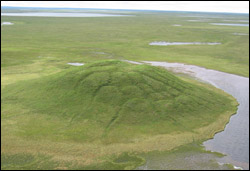

The Alaska North Slope contains enormous unconventional energy resources in the form of gas hydrates. Estimates of in-place shallow gas hydrate resources on the ANS are 590TCF, with 100 TCF or more beneath existing development infrastructure (Source: Tim Collett). Hydrocarbon rich fluids that migrate at depth along fault zones and interstitial pore spaces, under specific temperature and pressure conditions form gas hydrate accumulations, and excess methane/hydrocarbons then seep above the hydrate accumulation zones and reach the near surface and surface.
The surface expression of the hydrocarbon seepages/microseepages can be seen in the form of tainted soil, stressed vegetation, methane gas flux, and methane bubbles in lakes. Near surface permafrost features such as pingos and frost boils can also trap the excess hydrocarbons in this area. These surface expressions and near-surface permafrost features can be detected by remote sensing and can serve as an indirect indicator for the possible presence of shallow gas hydrate accumulations.
BLM intern and UAF graduate student Kristin Papp has carried out an analysis of near surface hydrocarbon distribution pattern around the Eileen Fault zone, Alaska North Slope. Kristin now works for BP Alaska.
BLM partially funded Sudipta Sarkar, to extend the study initiated by Kristin. Sudipta used remote sensing techniques to detect hydrocarbon 'hot spots', and map concentration zones of methane in the Alaska North Slope that have both biogenic and thermogenic origin. Sudipta is now completing his Ph.D. thesis.